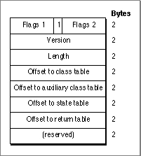
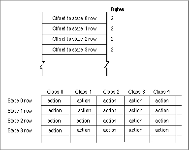
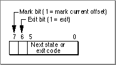
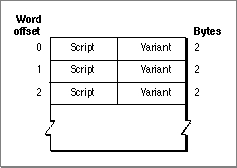

Legacy Document
Important: The information in this document is obsolete and should not be used for new development.
Important: The information in this document is obsolete and should not be used for new development.


The 'itl2' Tables
The following tables in the string-manipulation resource define character and word features for processing strings.
- Type list. Contains character-type information for each class of character (as specified by the class array) in the script system's character set. The Script Manager
CharacterTypefunction uses this table. The type list is used by 1-byte script systems only; character-type information for a 2-byte script system is in that script's encoding/rendering ('itl5') resource.- Class array. Maps each character in the script system's character set to a class, which is used to index into the other character tables in the string-manipulation resource. The Script Manager
CharacterTypefunction uses this table. The class array is used by 1-byte script systems only; character-class information for a 2-byte script system is in that script's encoding/rendering ('itl5') resource.- Uppercase list. Used to generate uppercase equivalents for all lowercase characters in the script system's character set. For each character class, contains a value to be added to the character code to convert all characters to uppercase. The Text Utilities
UppercaseTextprocedure uses this table. The uppercase list is used by 1-byte script systems only.- Lowercase list. Used to generate lowercase equivalents for all uppercase characters in the script system's character set. For each character class, contains a value to be added to the character code to convert all characters to lowercase. The Text Utilities
LowercaseTextprocedure uses this table. The lowercase list is used by 1-byte script systems only.- Uppercase strip list. Used to generate uppercase equivalents--without diacritical marks--for all characters in the script system's character set. For each character class, contains a value to be added to the character code to convert all characters to uppercase versions without diacritical marks. The Text Utilities
UppercaseStripDiacriticsprocedure uses this table. The uppercase strip list is used by 1-byte script systems only.- Strip list. Used to generate equivalents--without diacritical marks--for all characters in the script system's character set. For each character class, contains a value to be added to the character code to strip diacritical marks. The Text Utilities
StripDiacriticsprocedure uses this table. The strip list is used by 1-byte script systems only.- Word-selection table. A table of data type
NBreakTableorBreakTable, used by the Text UtilitiesFindWordBreaksprocedure to find word boundaries for the purposes of word selection. See "Supplying Custom Word-Break Tables" on page B-44 for a description of the break-table formats.- Line-break table. A table of data type
NBreakTableorBreakTable, used by theText UtilitiesFindWordBreaksprocedure to find word boundaries for breaking lines of text. The rules governing word boundaries for line breaking are generally somewhat different from those for word selection.- Script run table. A data structure used by the Text Utilities
FindScriptRunfunction. It is used to find runs of a subscript, such as Roman, within text of a non-Roman script system. See the next section.
Script Run Table Format
The script run table is used by the Text UtilitiesFindScriptRunfunction.FindScriptRunlocates runs of text that belong to a subscript, such as Roman, within a single script run. TheFindScriptRunfunction is described in the chapter "Text Utilities" in this book.There are two formats of script run table. The original format, used in versions of system software earlier than 7.1, consists of a series of byte pairs with the format character code, script code. The character code is the final character code in a range of characters that belongs to the script specified by the script code. (The table contains only final character codes; the initial character code of a range is assumed to be one greater than the final character code in the previous range--or 0 for the first range.) The last pair must
have character code $FF. For example, if the character set encoding for scriptsmSamplewere defined such that $00-7F and $A0 were Roman characters and the remaining characters were native characters insmSample, the table would appear as follows:
Character
codeScript code $7F smRoman $9F smSample $A0 smRoman $FF smSample This simple format is appropriate for script systems whose text can be separated into Roman or native characters based purely upon character code, and for which other subscript information (returned in the
variantfield of theScriptRunStatusrecord byFindScriptRun) is always 0. For 2-byte script systems, or when the same character could be designated as either Roman or native (depending on its context), this simple format is insufficient.The newer format for the script run table is used in versions of system software starting with 7.1. It consists of a header, a state table, and a set of associated tables, similar in structure to the word-break table of type
NBreakTable(described on page B-44). It is more flexible than the old format: for example, it can consider punctuation marks such as the period (ASCII code $2E) to be either to Roman or non-Roman, depending upon whether they are associated with Roman or non-Roman characters in the text. The script run table format is shown in Figure B-5.Figure B-5 Format of the script run table header (new format)
 The table header has these elements:
The header is immediately followed by the data of the class table, auxiliary class table, state table, and return table. The tables have this format and content:
- Flags 1 and flags 2. The flags are not defined and should be 0, except that the high-order bit of the second byte (flags 2) must be 1 to mark this as a new-format script run table.
- Version. The version number of this script run table format.
- Length. The length in bytes of this script run table.
- Offset to class table. The offset in bytes from the beginning of the script run table to the beginning of the class table.
- Offset to auxiliary class table. The offset in bytes from the beginning of the script run table to the beginning of the auxiliary class table.
- Offset to state table. The offset in bytes from the beginning of the script run table to the beginning of the state table.
- Offset to return table. The offset in bytes from the beginning of the script run table to the beginning of the return table.
- (reserved). Reserved.
The state table is shown in Figure B-6. The table begins with a list of words containing byte offsets from the beginning of the state table to the rows of the state table; this
- The class table is an array of 256 signed bytes. It assigns class values to 1-byte characters and works with the auxiliary class table to assign class values for 2-byte characters. It has the same format as the class table used by the word-break table described under "NBreakTable Format" beginning on page B-44.
- The auxiliary class table assigns character classes to 2-byte characters. It has the same format as the auxiliary class table used by the word-break table described under "NBreakTable Format" beginning on page B-44.
- The state table is used by
FindScriptRunto determine the subscript assignment for a given character class, accounting for its context. Using the state table,FindScriptRunstarts at a specified character, moving forward through the text until it encounters a subscript boundary.
is followed by a c-by-s byte array, where c is the number of classes (columns) and s is
the number of states (rows). The bytes in this array are stored with the column index varying most rapidly--that is, the bytes for the state 0 row precede the bytes for
the state 1 row. There is a maximum of 128 classes and 64 states (including the start
and exit states).Figure B-6 Script run table state table
 Each entry in this array is an action code, which specifies
The format of an action code is shown in Figure B-7.
- whether to mark the current offset
- whether to exit
- the next state or (if exiting) the exit code
Figure B-7 Format of a script run table action code
 The return table is a list of script code-variant pairs, as shown in Figure B-8. The table lists possible return values for the
FindScriptRunfunction. Each pair in the table is aScriptRunStatusrecord, as described in the chapter "Text Utilities" in this book. The variant associated with each script code gives subscript information for 2-byte script systems. WhenFindScriptRunexits the state table, it has encountered a subscript boundary; it uses the exit code to index into the return table and determine the script code of the subscript run it has just exited from.Figure B-8 Format of the script run table return table
